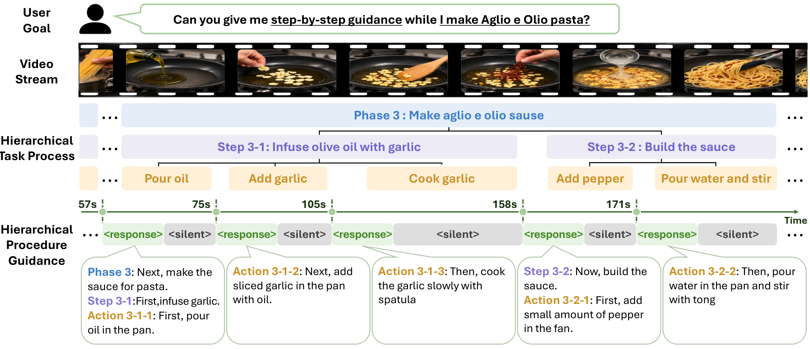
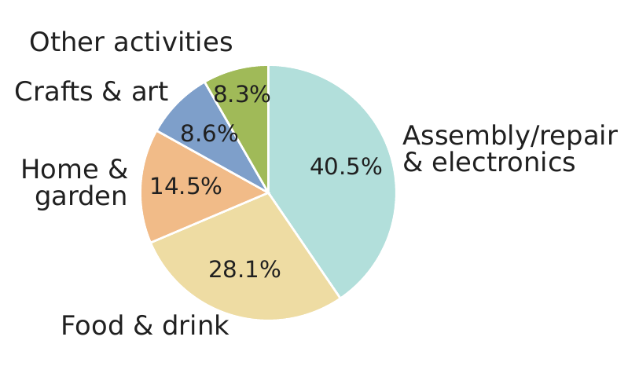
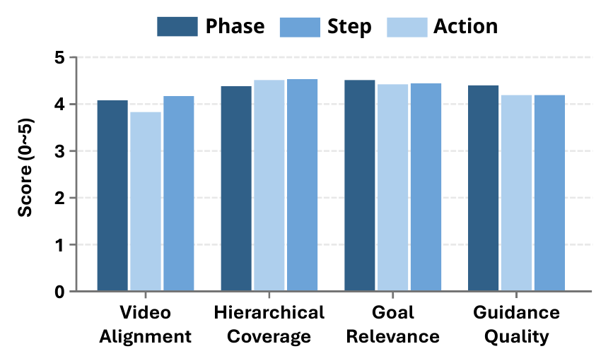
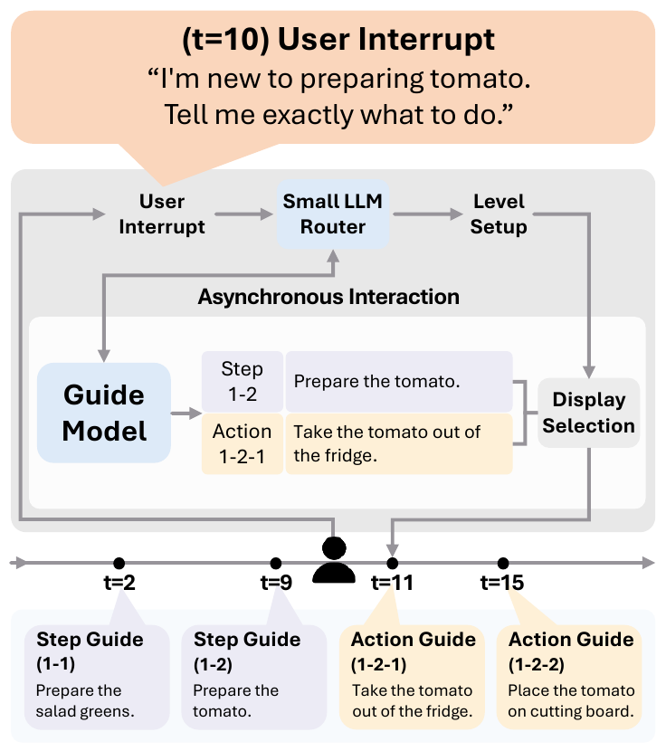

Improving Proactive AI Assistance
with Hierarchical Procedural Understanding
1 Department of Artificial Intelligence, Sungkyunkwan University, Republic of Korea2 College of Computing and Data Science, Nanyang Technological University, Singapore
*Corresponding authors
Abstract
Proactive AI assistants continuously observe a user's activity and decide whether to provide new guidance or remain silent. They should provide appropriate guidance for the task, determine when to provide the next guidance based on task progress, and adjust the guidance level to the user's expertise and needs. Supporting these capabilities requires training and evaluation data that reflect procedural structure and capture how guidance should adapt to task progress and user needs. However, existing datasets either focus on detection-based proactive understanding or provide procedural guidance at a fixed granularity. Fixed-granularity guidance provides limited information about fine-grained progress and broader procedural context, making it difficult to determine completion and adapt guidance granularity. To address these limitations, we introduce the ProactiveCoach suite, comprising ProactiveCoach-Instruct for training, ProactiveCoachBench for evaluation, and fine-tuned VLMs with an adaptive guidance system. ProactiveCoach-Instruct provides hierarchically structured guidance at the phase, step, and action levels for learning task progress and procedural context. ProactiveCoachBench evaluates whether models provide appropriate guidance at the right time across different guidance levels and adapt when the requested level changes. We fine-tune pretrained VLMs on ProactiveCoach-Instruct and demonstrate its effectiveness across backbones. Compared with fixed-granularity supervision, hierarchical supervision improves overall performance across backbones by up to 9.6%p. We further build an adaptive guidance system by combining our fine-tuned model with a lightweight guidance router. Without additional fine-tuning, our system outperforms the in-context adaptation baseline by 57.1%p across four guidance-level transitions.

Dataset



Each sample pairs a task goal and video with phase, step, and action guidance, event spans, and guidance times. A phase reaches an intermediate goal through multiple steps; a step achieves a specific outcome through multiple actions; an action is an observable, fine-grained event that can be guided independently.
Guidance timing is defined separately at each level: the next guidance follows completion of the previously guided event. When several levels require new guidance, their instructions are combined into one response. Otherwise, the assistant remains silent.
ProactiveCoach-Instruct contains 10,007 training samples, and ProactiveCoachBench contains 1,112 evaluation samples. Together they cover 7,232 first-person videos from eight source datasets. Dataset details in the paper.
Experimental Results
| Model | Ours | ProactiveCoachBench | EgoProactive | ||||||||||||||
|---|---|---|---|---|---|---|---|---|---|---|---|---|---|---|---|---|---|
| Phase | Step | Action | |||||||||||||||
| sF1 | gF1 | PQS | Avg. | sF1 | gF1 | PQS | Avg. | sF1 | gF1 | PQS | Avg. | sF1 | gF1 | PQS | Avg. | ||
| Proprietary Frontier Models | |||||||||||||||||
| Gemini 3 Flash Preview | No | 43.01 | 70.36 | 52.87 | 55.41 | 41.15 | 59.00 | 41.88 | 47.34 | 45.08 | 57.45 | 36.88 | 46.47 | 38.62 | 64.69 | 50.73 | 51.35 |
| Claude Haiku 4.5 | No | 43.25 | 27.70 | 18.18 | 29.71 | 41.51 | 22.54 | 22.89 | 28.98 | 41.60 | 23.90 | 19.80 | 28.43 | 38.81 | 52.63 | 34.20 | 41.88 |
| GPT-5.4 mini | No | 33.66 | 50.03 | 31.23 | 38.31 | 32.47 | 51.21 | 34.47 | 39.38 | 34.47 | 53.87 | 35.82 | 41.39 | 39.71 | 53.60 | 36.18 | 43.17 |
| Guidance Assist Models | |||||||||||||||||
| ProAssist-8B | No | 11.06 | 38.86 | 49.59 | 33.17 | 9.45 | 33.72 | 49.03 | 30.73 | 9.83 | 30.96 | 48.45 | 29.75 | 6.07 | 24.64 | 45.74 | 25.49 |
| Streaming Models | |||||||||||||||||
| VideoLLM-Online | No | 0.45 | 8.97 | 49.97 | 19.80 | 0.32 | 6.48 | 49.95 | 18.92 | 0.34 | 5.99 | 49.98 | 18.77 | 0.52 | 9.44 | 46.17 | 18.71 |
| MMDuet2 | No | 9.97 | 40.41 | 41.98 | 30.79 | 19.96 | 48.25 | 37.93 | 35.38 | 19.80 | 49.25 | 36.38 | 35.14 | 30.63 | 44.71 | 27.53 | 34.29 |
| VideoChat3-4B | No | 35.91 | 19.12 | 14.38 | 23.14 | 35.12 | 25.63 | 19.85 | 26.87 | 37.83 | 18.00 | 16.64 | 24.16 | 39.46 | 36.32 | 24.21 | 33.33 |
| Multimodal Models | |||||||||||||||||
| VideoChat-R1.5-7B | No | 0.05 | 2.41 | 49.81 | 17.42 | 0.07 | 3.93 | 49.72 | 17.91 | 0.11 | 3.33 | 49.43 | 17.62 | 0.20 | 4.67 | 45.69 | 16.85 |
| InternVL3-8B | No | 13.86 | 45.11 | 41.13 | 33.37 | 25.12 | 52.14 | 38.96 | 38.74 | 34.71 | 54.90 | 34.36 | 41.32 | 18.04 | 38.08 | 43.38 | 33.17 |
| VideoLLaMA3-7B | No | 15.90 | 44.46 | 35.63 | 31.99 | 21.66 | 48.82 | 38.15 | 36.21 | 27.74 | 50.08 | 34.16 | 37.33 | 1.07 | 9.14 | 41.80 | 17.34 |
| LLaVA-Video-7B | No | 20.34 | 47.74 | 35.26 | 34.45 | 30.19 | 51.65 | 34.90 | 38.92 | 25.34 | 51.55 | 40.10 | 39.00 | 35.73 | 47.65 | 33.05 | 38.81 |
| Qwen3-VL-32B | No | 41.56 | 38.50 | 22.11 | 34.06 | 38.46 | 23.89 | 21.71 | 28.02 | 38.85 | 20.84 | 17.25 | 25.65 | 32.06 | 49.81 | 40.14 | 40.67 |
| Qwen3-VL-4B | No | 35.93 | 25.82 | 18.19 | 26.65 | 36.50 | 26.01 | 20.99 | 27.83 | 37.46 | 27.78 | 18.65 | 27.96 | 39.93 | 35.90 | 24.33 | 33.39 |
| Qwen3-VL-4B | ✓ | 53.15 | 74.40 | 60.53 | 62.69 | 49.30 | 71.58 | 55.99 | 58.96 | 49.72 | 64.69 | 45.32 | 53.24 | 36.48 | 62.78 | 46.50 | 48.59 |
| Qwen3-VL-8B | No | 40.93 | 9.54 | 17.35 | 22.60 | 38.39 | 9.56 | 20.03 | 22.66 | 37.70 | 8.99 | 15.82 | 20.84 | 41.96 | 2.47 | 23.06 | 22.50 |
| Qwen3-VL-8B | ✓ | 54.63 | 76.21 | 61.37 | 64.07 | 50.24 | 72.02 | 55.83 | 59.37 | 50.07 | 64.12 | 44.77 | 52.99 | 35.28 | 63.06 | 48.55 | 48.96 |
| Qwen3.5-4B | No | 19.20 | 47.85 | 35.71 | 34.25 | 20.86 | 49.10 | 39.90 | 36.62 | 21.76 | 47.81 | 40.81 | 36.79 | 14.84 | 36.68 | 44.22 | 31.91 |
| Qwen3.5-4B | ✓ | 52.87 | 75.15 | 60.79 | 62.94 | 49.35 | 72.27 | 56.27 | 59.30 | 50.43 | 64.75 | 45.15 | 53.44 | 35.76 | 60.06 | 45.61 | 47.14 |
| Qwen3.5-9B | No | 40.10 | 11.65 | 17.42 | 23.06 | 38.38 | 26.90 | 21.54 | 28.94 | 40.71 | 26.86 | 18.92 | 28.83 | 37.10 | 25.85 | 21.87 | 28.27 |
| Qwen3.5-9B | ✓ | 50.50 | 72.79 | 60.08 | 61.13 | 48.24 | 71.29 | 56.90 | 58.81 | 50.56 | 66.17 | 47.58 | 54.77 | 36.67 | 62.17 | 46.73 | 48.52 |
| Method | ProactiveCoachBench Step | |||
|---|---|---|---|---|
| sF1 | gF1 | PQS | Avg. | |
| Step-only | 41.01 | 64.53 | 44.62 | 50.06 |
| Phase-Step | 48.21 | 66.22 | 46.37 | 53.60 |
| Step-Action | 46.16 | 70.81 | 55.02 | 57.33 |
| Phase-Step-Action | 49.35 | 72.27 | 56.27 | 59.30 |
Adapting the guidance level
A lightweight router selects the requested level from the fine-tuned model's multi-level guidance.

| Transition | In-context baseline | Proactive |
|---|---|---|
| Step → Phase | 9.46 | 85.54 |
| Step → Action | 18.65 | 57.93 |
| Phase → Step | 8.49 | 66.56 |
| Action → Step | 18.70 | 73.70 |
Avg. is the mean of sF1, gF1, and PQS, which assess guidance quality and response/silence decisions.
Qualitative Examples
Loading examples…
USER QUERY
Annotations available.
Video unavailable for this case.
You can still explore the annotations. Reload to retry the video.
Recording details
- Dataset
- Recording ID
- Video interval
Latest annotated guidance
Updates at the recorded guidance timestamps.
Step · ground truth
Action · ground truth
Event spans & guidance timing
Event executionGuidance timestamp
/
Swipe the timeline horizontally for detail. Use the event list below for precise selection.
BibTeX
arXiv:2610.06505 · 2026 · cs.LG
@misc{proactive,
title = {Improving Proactive AI Assistance with Hierarchical Procedural Understanding},
author = {Lee, Jin-Seop and Won, TaeYeon and Jung, SeongJun and Kim, JungHoon and Li, Boyang Albert and Bak, JinYeong and Yoon, Jaehong and Lee, Jee-Hyong},
year = {2026},
note = {Preprint},
eprint = {2610.06505},
archivePrefix = {arXiv},
primaryClass = {cs.LG},
url = {https://arxiv.org/abs/2610.06505}
}